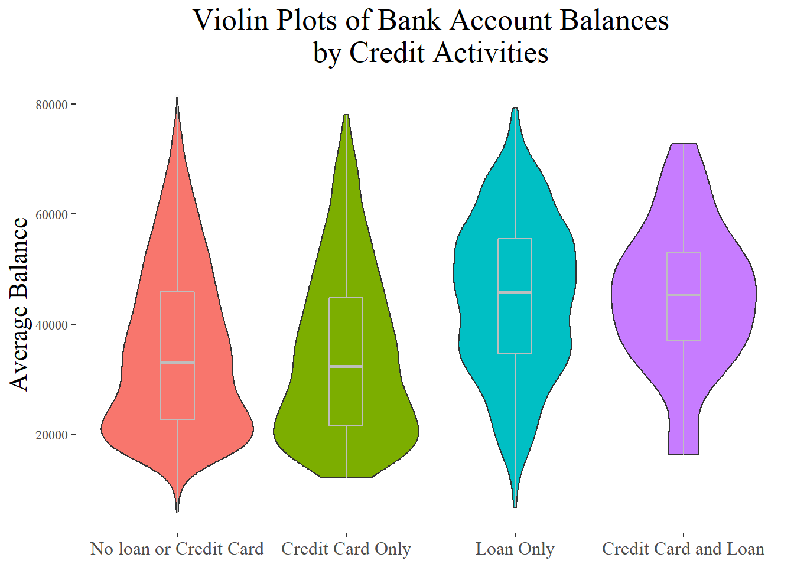
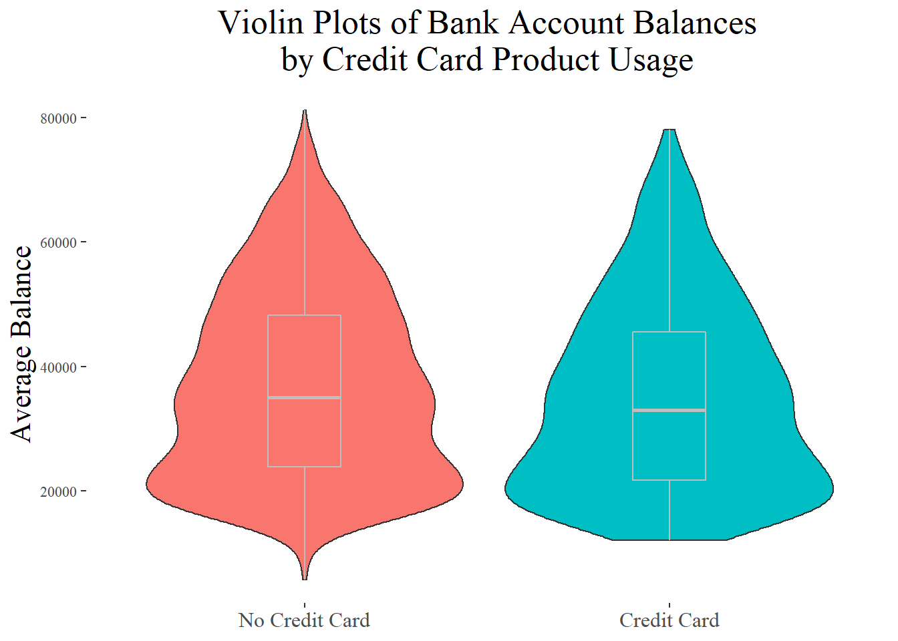
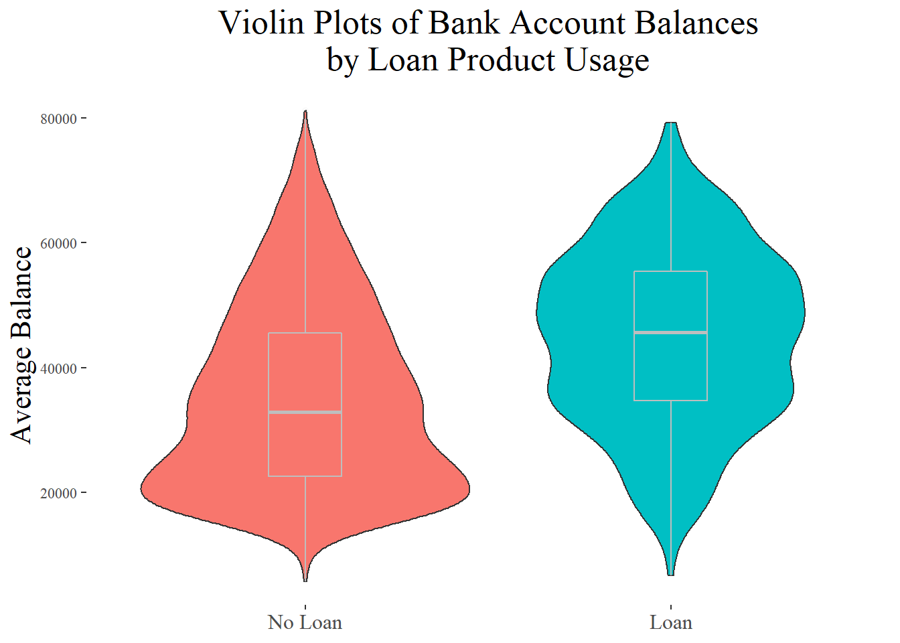
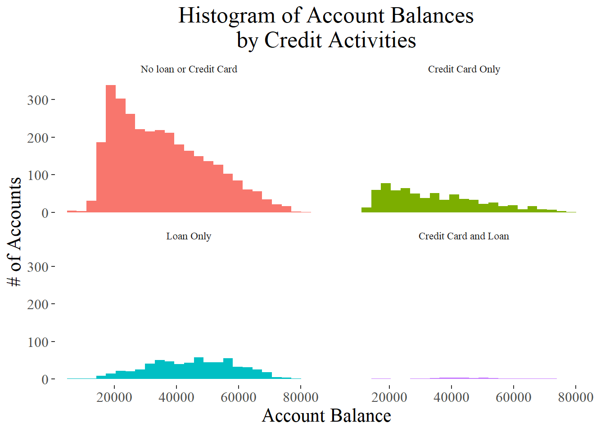

The accounts data does not contain an average balance variable, so one is created using the transactions dataset then merged back into the main dataset. Since we are interested in knowing about accounts partitioned by their loan and credit card product usage, we create dummy variables for whether or not a client has a credit card and whether or not the user has a loan. Since these are both credit products, the most interesting way to visualize is whether a client has both types of credit products, only one, or none. Thus, a double dummy is made as a four choice factor variable.
# read in data
accounts_data <- read_csv('data/accounts_analytical.csv')
transactions_data <- read_csv('data/transactions.csv')
# get average balance for all accounts
mean_bal <- transactions_data %>%
group_by(account_id) %>%
summarize(avg_balance = mean(balance))
# join average balance data to main accounts data
accounts_data <- accounts_data %>%
left_join(mean_bal, by = 'account_id')
# create dummy variables for credit cards and loans
accounts_data <- accounts_data %>%
mutate(cc_dummy = if_else(credit_cards > 0, TRUE, FALSE, FALSE),
loan_dummy = if_else(is.na(loan_date), FALSE, TRUE),
double_dummy = case_when(loan_dummy == TRUE & cc_dummy == TRUE ~ "cc+loan",
loan_dummy == TRUE ~ "loan",
cc_dummy == TRUE ~ "cc",
TRUE ~ "none"),
double_dummy = fct_relevel(double_dummy, c("none","cc","loan","cc+loan")))The first plot shows how the average account balance is distributed based on how clients interact with credit products. We can see that clients with a loan have a greater average account balance distribution, but the same cannot be said for the use of credit cards. Having no credit products and having a credit card only lead to mainly similar shapes.
ggplot(accounts_data, aes(x = double_dummy,
y = avg_balance,
fill = double_dummy)) +
geom_violin() +
geom_boxplot(width=0.2, color="grey", alpha=0.05) +
# modify the x axis labels for presentation
scale_x_discrete(limits = c('none','cc','loan','cc+loan'),
labels = c('No loan or Credit Card','Credit Card Only','Loan Only','Credit Card and Loan')) +
# modify the plot labels
labs(title = "Violin Plots of Bank Account Balances\nby Credit Activities",
y = "Average Balance",
x = NULL) +
# theme mods
theme_tufte() +
guides(fill = FALSE) +
theme(title = element_text(size = 16),
axis.text.x = element_text(size = 12),
plot.title = element_text(hjust = 0.5))
It is also worth considering the individual effects of a credit card on its own. As seen from the previous plot, the average balance is pretty similar for those with and without a credit card.
# credit card dummy plot
ggplot(accounts_data, aes(x = cc_dummy,
y = avg_balance,
fill = cc_dummy)) +
geom_violin() +
geom_boxplot(width=0.2, color="grey", alpha=0.05) +
# modify the x axis labels for presentation
scale_x_discrete(limits = c(FALSE, TRUE),
labels = c('No Credit Card','Credit Card')) +
# modify the plot labels
labs(title = "Violin Plots of Bank Account Balances\nby Credit Card Product Usage",
y = "Average Balance",
x = NULL) +
# theme mods
theme_tufte() +
guides(fill = FALSE) +
theme(title = element_text(size = 16),
axis.text.x = element_text(size = 12),
plot.title = element_text(hjust = 0.5))
Comparing accounts with and without a loan shows the biggest different in account balance. Accounts with loans tend to have a higher balance.
# loan dummy plot
ggplot(accounts_data, aes(x = loan_dummy,
y = avg_balance,
fill = loan_dummy)) +
geom_violin() +
geom_boxplot(width=0.2, color="grey", alpha=0.05) +
# modify the x axis labels for presentation
scale_x_discrete(limits = c(FALSE, TRUE),
labels = c('No Loan','Loan')) +
# modify the plot labels
labs(title = "Violin Plots of Bank Account Balances\nby Loan Product Usage",
y = "Average Balance",
x = NULL) +
# theme mods
theme_tufte() +
guides(fill = FALSE) +
theme(title = element_text(size = 16),
axis.text.x = element_text(size = 12),
plot.title = element_text(hjust = 0.5))
The final plot for this analysis shows a histogram of the account balances based on their credit activities. This graph differs from the violin plot in that we can see how many clients fall into each category. Most customers do not use either credit product. This opens the opportunity for growth by having more customers take out loans, which would tend to increase the average account balance for the depository institution.
# double dummy histogram
ggplot(accounts_data, aes(x = avg_balance,
fill = double_dummy)) +
geom_histogram(bins = 25) +
labs(title = "Histogram of Account Balances\nby Credit Activities",
y = "# of Accounts",
x = "Account Balance") +
# remove legend
guides(fill=FALSE) +
# theme elements
theme_tufte() +
theme(title = element_text(size = 16),
axis.text = element_text(size = 12),
plot.title = element_text(hjust = 0.5),
legend.position = "bottom") +
# facet the distributions and provide custom subtitles
facet_wrap(~double_dummy,
labeller = labeller(double_dummy = as_labeller(c('none' = 'No loan or Credit Card',
'cc' = 'Credit Card Only',
'loan' = 'Loan Only',
'cc+loan' = 'Credit Card and Loan')
)
)
)